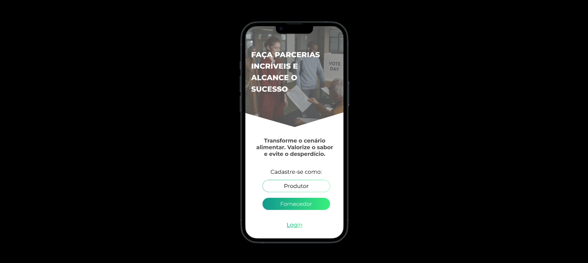

data: 26/03/2023
Projeto UI UX Design do App LocalFood!

Desenvolvimento do App LocalFood para o Hackathon Rio Empreender 2023. Esse projeto conta com um app capaz de conectar distribuidores de comida e possíveis compradores, de acordo com seus interesses em comum. Além disso, todos os anúncios feitos são minuciosamente avaliados por nossa equipe de profissionais especializados no setor alimentício, assim, garantindo maior segurança, tanto para os compradores, quanto para os fornecedores. A equipe vai presencialmente ao estabelecimento que deseja anunciar seus produtos alimentares e os avalia; dando validade de compra a eles, documentando e anunciando no aplicativo toda a carga e garantindo toda a vigilância necessária para as negociações conseguintes. Quando o estabelecimento for aprovado, poderá optar a mensalidade como mercado parceiro com benefícios exclusivos. As ONGs que têm dificuldade de acesso de recebimento da doação de alimentos poderão usufruir das ofertas de doação do Mercado parceiro no aplicativo. Dessa outra forma, os produtores também podem usufruir as ofertas de compras da sobra dos alimentos para produzir rações, roupas, insumos agrícolas, alimentos desidratados, comidas militares ou de acampamento e muito mais. Esses produtores podem participar da mensalidade do cliente premium com acesso aos seus benefícios exclusivos.